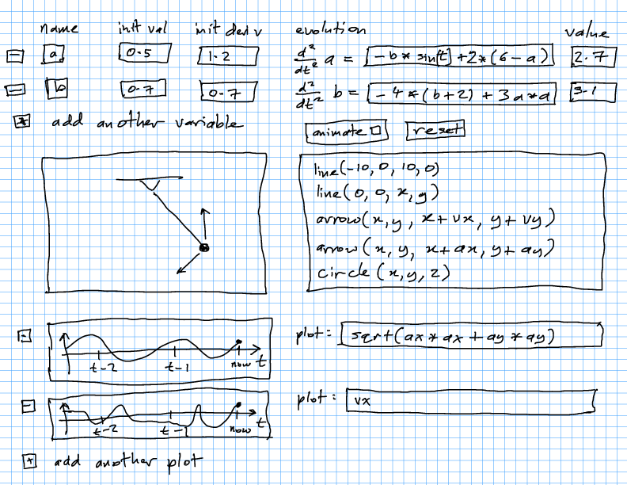
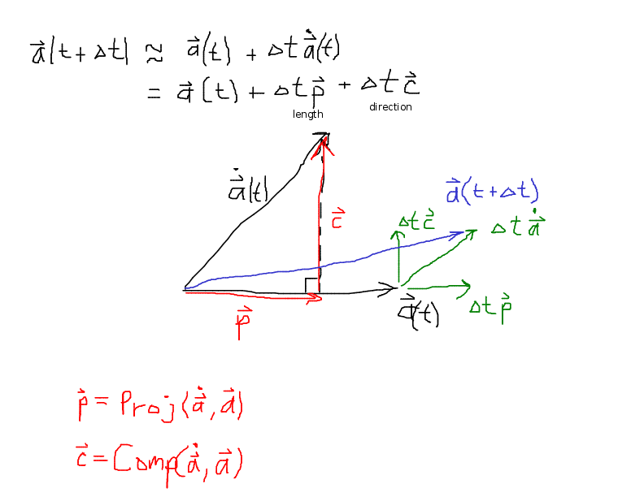

To Do
- Add the formulas for a point rotating about the origin: $\vec{v} = \vec\omega \times \vec{r}$ and $\vec{a} = \vec\alpha \times \vec{r} + \vec\omega \times (\vec\omega \times \vec{r})$.
- Add questions to practice chain rule, especially with $r'(\theta)$, $\dot\theta$, etc.
- Add warning box and PrairieLearn questions about the fact that $v$ is the magnitude of $\vec{v}$, and $\omega$ is the magnitude of $\vec\omega$, but if we define $\vec\omega = \omega\hat{k}$ or $\vec{v} = v\hat\imath$ then we need to add absolute value signs to get magnitudes $|v|$ and $|\omega|$.
- Change #rko-sc (rolling on curved surface) to always have $\hat{e}_t$ point in the direction that would be generated by positive counterclockwise motion, and define $\omega$ by $\vec\omega = \omega\hat{k}$ as usual.
- Rewrite #rvv-sb to focus on projection onto unit vectors via dot product (perhaps do this earlier in the dot product section explicitly) and then use this to do basis changes. Delete the general basis change formula and the 2D version.
- Near #rvv-en, say that $\vec{a}^\perp$ is pronounced “a perp”.
- Add visualization to #aos to describe the initial compass angle for great circle paths.
- Change notation on #rvc to use something other than $\vec{a}$ for the generic vector. Perhaps $\vec{b}$.
- Add default $\hat\imath,\hat\jmath$ basis to all drawings where necessary, and on all homework questions.
- Fix notation for scalars: $\omega$ is always $\|\vec\omega\|$, and we will write $\vec\omega = \omega_z \hat{k}$ and use $\omega_z$ for the signed out-of-plane component. Similarly, $v = \|\vec{v}\|$ is always speed, and we write $\vec{v} = v_x\hat\imath$ when we want a signed component. This allows us to clearly distinguish between signed (component) and unsigned (magnitude) scalar variables. If we know $\hat{a}$ (for sure, not up to sign), then we can write $\vec{a} = a\hat{a}$. If we only know a parallel vector to $\vec{a}$ (so don't know sign), then we call it $\hat{u}$ and write $\vec{a} = a_u\hat{u}$.
Ideas
Animals shaking to remove water. Centrifugal forces 10 to 70 times $g$. See Discover blog and Nature News & Comment, as well as the original paper and the researcher's website.
Nature paper on cheetah accelerometer data. Also Ars Technica article and video. Animagraffs has a animation page about cheetahs' running.
Running versus walking. Can we compute the energy efficiency based on the work done given a trajectory for the center of mass or something like that? Could introduce the idea of inverse kinematics. See Cheetahs on the Edge--Director's Cut for cheetah running footage. Explain "biomechanics", tendons, muscles, etc. Energy efficiency comes from not moving the body up and down. Note how stable the cheetah's body and head are. See also Chicken Head Tracking - Smarter Every Day for chicken's ability to keep their heads stable. This is very challenging for current robots. Show Cheetah Robot from Boston Dynamics (28 mph for the robot, about the same as Usain Bolt - real cheetahs can do 75 mph over short distances). Fastest road car ever is Bugatti Veyron, can reach 60 mph in 2.8 seconds, about the same as a cheetah which can do it in 3 seconds. Also note how little the cheetah is in contact with the ground. According to some guy on Reddit, in the 9.58 seconds it took Usain Bolt to finish the 100, he spent 5.29 seconds not touching the ground at all.
Spear throwers.
Chebychev–Grübler–Kutzbach criterion for determining the degrees of freedom of a kinematic chain
Photo taken half-in/half-out of a streetcar. Don Chamblee. link. Also imgur link. local link.
{kind=link}
Animation of the graphical proof of Pythagorus' equation. Proof of #rvv-ey. See wikipedia page, the animation on the left, showing 4 triangles of sides $a,b,c$ arranged inside a square of side length $a + b$ so that there is an interior square of side length $c$, with area $c^2$. Then rotate two of the triangles around to form two rectangles of size $a \times b$, and the remaining area is composed of two squares of side lengths $a$ and $b$, respectively. From the original image we can also immediately write that $(a + b)^2 = c^2 + 4(ab/2) = c^2 + 2ab$.
Proof of integration by parts with a diagram.
Proof that the derivative of $\sin$ is $\cos$ from a diagram.
Graphical proof that the volume of a circle is $\pi r^2$ by Steven Strogatz.
Pull-rod suspension in the Ferrari F2012.
Red Bull Racing F1 Car — Owners' Workshop Manual, also from Haynes online, review at ScarbsF1.
See Ruina and Pratap.
Helicopters, rotors, swash plate for producing oscillation. Why have a tail rotor?
Invention of various mathematical systems. Full list. The equal sign was first used in The Whetstone of Witte. The full copy of this text is also available.
Vector notation: bold was first used by the book by E. B. Wilson entitled Vector Analysis: A Text Book for the Use of Students of Mathematics and Physics Founded upon the Lectures of J. Willard Gibbs (1901). This book followed Hamilton in using i,j,k for the basis vectors, thinking of this as an extension of complex numbers.
Exploded view diagrams drawing of engineering systems here.
Change #rvy cylindrical coords to use $R,\theta,z$ and $\vec{r}$ rather than the current $r,\theta,z$ and $\vec{\rho}$. The current scheme is confusing with $\rho$ being radius of curvature. Also current scheme is inconsistent with #rkm.
Asteroid impacts on the Earth. Especially the Cretaceous–Paleogene extinction event with the Alvarez iridium discovery and the finding of the Chicxulub crater. Also the Tunguska blast. Compute kinetic energy of impact and relate to nuclear weapon yields. Use angular momentum conservation to compute change of Earth's rotation rate.
Asteroid impactor space missions.
Why do wind turbines always have three blades? Why not two? See notes. See MIT Tech Review on huge blades.
How do humans sense acceleration? Using the Vestibular system. The otolithic organs sense linear acceleration, while the semicircular canals sense rotary acceleration.
How do accelerometers work? MEMS cantilever beams. Orientation sensing.
What is the force of gravity on us due the Earth, Sun, another person sitting next to us, another nearby star?
Analysis of amazing football kicks using Tracker.
History of rates of travel in the US from 1800 to 1930, from this page in the Atlas of the historical geography of the United States, by Charles O. Paullin, edited by John K. Wright. See also the article on MNN (Mother Nature Network).
{kind=link}
New Scientist gallery on how far locations on the Earth are from civilization.
ORBIS is the Stanford Geospatial Network Model of the Roman World, showing travel times in the Roman era.
Michael Schumacher being cheered by his pit crew as he wins the 2000 Australian Grand Prix at the Melbourne Grand Prix Circuit in a Ferrari F1-2000. Image source: flikr image by Gail Gray (CC BY 2.0) (full-sized image).
{kind=link}
Painleve paradox.
- Units and dimensions.
- Vector derivatives, velocity and acceleration.
- Forces, F = ma, point masses.
- Free body diagrams.
- Method of assumed forces, method of assumed motion.
- Constrained motion, degrees of freedom.
- Rigid bodies, angular velocity, v = vc + omega cross r.
- Euler's laws of motion in 2D: F = m aCM, I alpha = M.
- Coordinate systems, basis vectors: polar, spherical.
- Differentiating unit vectors, velocity and acceleration in coordinate systems.
- Tangential/normal coordinates.
- Relative motion. Change of frame.
- Energy, work, conservative forces.
- Momentum, impulse.
- Contact: collisions and friction (viscous/wet and Coulomb/dry).
- Angular momentum.
- Euler's laws in 2D with variable geometry, changing I.
- Euler's laws in 3D, gyroscopes.
-
From Ruina and Pratap:
-
Two key toolbox skills (written HW checking):
- Do clear, correct vector algebra, keeping vectors and scalars distinct.
- Draw clear and reliable free-body diagrams.
-
Three key computational skills:
- Solution of simultaneous algebraic equations (linear and nonlinear).
- Plotting.
- Numerical solution of ODEs.
-
Two key toolbox skills (written HW checking):
Gottfried Wilhelm von Leibniz (1646–1716). Image credit: Wikimedia Commons (public domain) (full-sized image).
{kind=link}
{kind=link}
Leibniz had a very bitter and long-running famous dispute with Isaac Newton over who was the first to invent calculus. It is now generally accepted that they were independent co-inventors, but the debate raged for over 100 years and led to a major split between continental mathematicians (favoring the German Leibniz) and English-speaking scholars (supporting Newton).
The Tau Manifesto. Vi Hart on Pi being wrong.
What was up with Pythagorus? by Vi Hart about the irrationality of $\sqrt{2}$.
Finding orthogonal bases in 2D and 3D. In 2D can always do the flip trick, in 3D need successive cross products.
Galaxy rotation rate curves. We can compute the expected curve using $1/r^2$ gravity, plot the measured curves. Thus dark matter.
Saluki running dog gait: PBS show, wikipedia, speedy saluki video. Animal gaits.
Simulation app:
City lights from satellite view at night in US.
Coordinate system comparison page. Show 3D curves like the T/N saddle, and also 2D curves like the trefoil. Be able to switch origins. Table of pros/cons/when applicable. Note that $\vec{\omega}$ is of coord system, not of point moving (same for polar).
Exoplanet finding using: (1) motion (velocity variations, redshift); and (2) occlusion (how long do we expect the dips to be?).
Letters lost from the English alphabet (also unicode codes). Thorn: Þþ, Wynn: Ƿƿ, Yogh: Ȝȝ, Ash: Ææ, Eth: Ðð, Insular g: Ᵹᵹ, Thorn with stroke: Ꝥꝥ, Ethel: Œœ, Tironian ond: ⁊, Long s: ſ, Eng: Ŋŋ.
Shift path length box from #rkt to #rkv and add more stuff on speed versus velocity to it. Note that there is not name for $a$ (versus $\vec{a}$).
Add the explicit formulas $a_r = v^2/r = r\omega^2$ to #rke.
Reflections on relativity by Kevin Brown.
Reddit discussion on speed of F1 cars.
Mechanical transmission of power: Stangenkunst and jerker line systems.
Astronaut training in the NASA underwater facility: arstechnica article, arstechnica image gallery.
Slingjaw wrasse (Epibulus insidiator): video, statistics on the jaw movement, paper 1, paper 2.
Goblin shark: swimming around with no action, a small live one biting a diver's arm, a big dead one showing the jaw, distribution map.
{kind=link}
self-trimming wingsails, autonomous windthruster.
Turning in aircraft: Langewiesche Atlantic article, barrel roll while pouring ice tea (YouTube). modern version of the Bob Hoover maneuver.
Add Hairy Ball Theorem infoBox to spherical coordinate page.
Greek alphabet, table with Greek letters, their names, and corresponding Latin letters. The Greek alphabet came from the Phoenician alphabet, which in turn came from the Proto-Sinaitic script. Phoenician was the source of most (all?) alphabets, as it led to Greek and Aramaic. Greek in turn led to Latin and Cyrillic, while Aramaic led to Arabic, Hebrew, and Brāhmī. This last developed into the Brahmic scripts of South, Southeast, and Central Asia, including the Devanagari alphabet used to write modern Hindi, Sanskrit, and other languages.
| Α α | Ε ε | Ι ι | Ν ν | Ρ ρ | Φ φ |
| Β β | Ζ ζ | Κ κ | Ξ ξ | Σ σ | Χ χ |
| Γ γ | Η η | Λ λ | Ο ο | Τ τ | Ψ ψ |
| Δ δ | Θ θ | Μ μ | Π π | Υ υ | Ω ω |
| Α α |
| Β β |
| Γ γ |
| Δ δ |
| Ε ε |
| Ζ ζ |
| Η η |
| Θ θ |
| Ι ι |
| Κ κ |
| Λ λ |
| Μ μ |
| Ν ν |
| Ξ ξ |
| Ο ο |
| Π π |
| Ρ ρ |
| Σ σ |
| Τ τ |
| Υ υ |
| Φ φ |
| Χ χ |
| Ψ ψ |
| Ω ω |
| Α | α | Alpha |
| Β | β | Beta |
| Γ | γ | Gamma |
| Δ | δ | letter |
| Ε | ε | Epsilon |
| Ζ | ζ | Zeta |
| Η | η | Eta |
| Θ | θ | theta |
| Ι | ι | iota |
| Κ | κ | kappa |
| Λ | λ | lambda |
| Μ | μ | mu |
| Ν | ν | nu |
| Ξ | ξ | xi |
| Ο | ο | omicron |
| Π | π | pi |
| Ρ | ρ | rho |
| Σ | σ | sigma |
| Τ | τ | tau |
| Υ | υ | upsilon |
| Φ | φ | phi |
| Χ | χ | chi |
| Ψ | ψ | psi |
| Ω | ω | omega |
Salamanders using photosynthesis via algae.
Computing cross products. Component formula, determinant formula, rows-with-cross-off-the-ends formula.
Penguin feeding habits with head and body mounted accelerometers. PNAS paper with included videos. Ars Technica article.
GIF showing how keys work.
EDL - Entry, Descent, Landing. Onto Mars. Also onto Titan by the Huygens probe.
Example: Pantograph.
Consider a four-bar pantogram, as in https://en.wikipedia.org/wiki/Pantograph.
Take $O$ to be the fixed point, $T$ to be the tracing
point, and $D$ to be the drawing point. Show that
$\overrightarrow{OD} = \alpha \overrightarrow{OT}$ for
some scalar $\alpha$. Why does this mean that the
pantograph works? What determines $\alpha$.
Rearrangement plan for vector pages:
- Shift dot/cross product and projection material from #rvv and combine with #rvi to form a new page called "vector products".
- Add coordinate system basis vectors to #rvv with polar coordinates as the example, writing out the cartesian conversion by observation in 2D.
- Add derivatives of $\hat{e}_r,\hat{e}_\theta$ to #rvc, and do examples of differentiating vectors expressed in this changing basis.
- Add section on defining coordinate basis vectors using partial derivatives with respect to coordinates to #rvc.
Standardize on "rectangular" or "Cartesian". Probably "rectangular"?
Visualizing coordinate charts: Have an active canvas on which we can draw with the mouse by clicking (just enable drawing points? or also lines?). Have a readout showing the coordinates of the mouse at all times. Use polar coordinates, which an origin that is not centered on the canvas (or maybe some more complex coordinate system?). Start with a blank canvas. Ask: draw points that have first coordinate equal to 2. Then draw the points with first coordinate equal to 1. Do the same for points with second coordinate equal to 1, 2, 3, 4, 5, 6. What type of coordinate system is this? Show the standard polar grid.
In change of basis section, talk more about finding component in a given direction by taking dot product with a unit vector. Use this as a method to change basis, in addition to substitution. Add a note about the fact that this is really matrix multiplication?
SailRocket: wired article video of SailRocket 2 breaking speed record, video of SailRocket 1 crashing
Animated example for vector derivative decomposition on #rvc:
Example: Angular velocity and angular frequency.
Show the relationship between \(\rm rad/s\), \(\rm Hz\),
and period \(T\). See
https://en.wikipedia.org/wiki/Angular_frequency
for some nice examples.
Example: Rotations are not vectors.
Rotations are not vectors. We could write a rotation about the direction \(\hat{b}\) by angle \(\theta\) as the vector \(\vec{a} = \theta \hat{b}\). But this would be dangerous, as adding rotation vectors would not correspond to composing the rotations (as rotations do not commute). See p. 89 in GCP.
Add Instantaneous center of rotation to #rkg. Also add a figure showing a vector field of the different velocity components (and acceleration?) at a grid of points on the rigid body.
Flying squid. (another article, and another, plus one more).
Does a sniper need to account for the rotation of the Earth (Coriolis acceleration)?
Moth trails (reddit discussion).
{kind=link}
Video of Mercedes Gullwing doing a barrel roll in a tunnel.
What is the relationship between aircraft turn radius and velocity, assuming max acceleration of $9g$. For an SR-71 flying at Mach 3, what is this turning radius?
Car back-flip (video 1, video 2, fancy video, Daily Mail article, AFP video, Guerlain Chicherit, Reddit discussion).
Deepwater horizons oil platform exploding and collapsing.
{kind=link}
ToDos for #rep: (1) shift #rep-ep above #rep-xf and rework #ref-xf and #rep-xm to follow the 4 steps, and add diagrams; (2) add an example problem to the end of the angular momentum section with the pendulum done with ang. mom.; (3) add the derivation of $I_O = mr_{OP}^2$ for point masses, writing $\vec{H}_O = I_O\vec\omega$ and $\vec{M}_O = I_O\vec\alpha$.
Add pages on Cartesian coordinates and polar coordinates, showing similar diagrams to #rvy and #rvs, with basis vectors. The #rvp Cartesian/polar sections do not include the basis vectors.
Fiery looping rain on the sun.
Quadrocopter Pole Acrobatics from Raff D'Andrea, article on this.
Asteroids: Asteroid 2012 DA14 Earth Flyby trajectory, video of DA14 flyby, Chesapeake Bay impact crater, WISE estimates of near-Earth object counts.
Asteroid hunting group: B612 Foundation. Deflection concept: gravity tractor.
Awesome photos of Russian meteoroid: APOD, photographer's page. Also NASA video showing model output of the resulting dust plume.
- Satellites and Space
- Shortest flight paths
- Celestial velocities
- Sunrise and sunset
- How does GPS work?
- Satellite positions and observing
- How do sextants work?
- Gravity assist (slingshot)
- Orbital maneuvers
- Vehicle Dynamics
- Accelerating and braking
- Track transition curves
- Banked turns
- Steering geometry
- Accident reconstruction
- Engine power and torque
- Spoilers
- Aircraft landing gear
- Drifting
- Machines and Mechanisms
- Pulleys
- Gears
- Four-bar linkages
- Cams
- Pantographs
- Windshield wipers
- Robot actuators
- Amusement Park Rides
- G-forces
- Loop-the-loop
- Rollercoasters
- Joint forces and moments
- Circuses and Stunts
- Cirque du Soleil
- Trapeze
- Safety nets
- Evel Knievel
- Sports and Biomechanics
- Hitting a ball
- Baseball hitting
- Long jump
- Bicycle dynamics
- Ice skaters
- Spin stabilization
- Ski jumping
- Fluids and Flying
- Airfoils
- Sailboats
- Tangential/normal
- Helicopters
- Wind power
- Weapons and War
- Projectile stabilization
- Siege weapons
- Bows
- Missiles
- Swords
- Projectiles
- Defensive weapons
- Miscellaneous Things
- Motion tracking
- Measuring heights
- Skydivers
- Hard and Floppy Drives
- Mass dampers in towers
On #aml, make it optional whether to display the linkage bars.
Long National Geographic video on the Tesla factory and its use of flexible robotics.
In #avs, add section showing caster angle, toe, camber angle, article on camber, caster, toe, maybe trail?
TP-82 pistol was a triple-barreled Soviet firearm that was carried by cosmonauts on space missions, intended as a survival aid to be used after landings and before recovery in the Siberian wilderness. The M6 Aircrew Survival Weapon was a similar idea for American aircraft.
Robot with tail uses it to make fast turns. Good example for angular momentum.
Homemade DIY weapons used by Syrian rebels, including catapults and slingshots.
History of Mathematical Notations by Florian Cajori (1929?). origins of + and - symbols. The first appearance of + and – in English was in the 1551 book on algebra The Whetstone of Witte by the Oxford mathematician Robert Recorde, who also introduced the equal sign.
Definitive page on math symbol history: Jeff Miller's page.
Hyperphysics from Georgia State University.
bird that looks like a B2 bomber. Also from reddit discussion, the bird is a Common Buzzard and the photo is by Michal Skakuj. See also a combined photo, and a photoshop merge.
{kind=link}
{kind=link}
{kind=link}
{kind=link}
photoshop of a helicopter with spinning seed as rotor.
{kind=link}
photo of riding a bike horizontally around a curb, with centrifugal force.
{kind=link}
video and reddit discussion of backwards-time video.
Poster of how owls rotate their heads. Title: Adaptations of the Owl's Cervical & Cephalic Arteries in Relation to Extreme Neck Rotation. Authors: Fabian de Kok-Mercado, Michael Habib, Tim Phelps, Lydia Gregg, and Philippe Gailloud, Johns Hopkins University School of Medicine, Department of Art as Applied to Medicine. NSF link. Entry details. Description:
{kind=link}
Instead of moving their large, tubular eyes in their sockets, owls swivel their heads 270°. This poster explains the likely mechanism for the eerie ability. The team obtained 12 dead birds from educational centers in Michigan and Missouri. Then they created three-dimensional images of the owls' blood vessels and bones with a CT scanner, and injected the birds with radio-opaque dye and liquefied red plastic to preserve their arteries before dissecting them. On close examination, the owls revealed surprising secrets. The researchers found swellings in the birds' arteries that likely act as reservoirs for pooling blood when the head is turned, says Fabian de Kok-Mercado at Johns Hopkins University, as well as "backup" arteries that could help supply the brain when other arteries are pinched.
Add material to #rkg about finding instantaneous center graphically by drawing perpendicular lines, or perpendicular lines plus lines through velocity ends.
Questions for banked turns:
- rail track cant — explain \(V_{\rm max} = \sqrt{\frac{E_{\rm a} + E_{\rm u}}{0.0007 d}}\) formula from Cant on Wikipedia
- See Operating at High Cant Deficiency by Peter Klauser, October 2005, Interface Journal
- Velodrome images from Velo Steve, flyinfoto, TimWilson
- Why is it more important to have correct track transition curves for trains that for roads? Because for roads the car can correct by not driving on the centerline.
- What happens to a bicycle if you try and turn around a curve without leaning over? Is it possible to turn without leaning?
Video: Riding the Booster with enhanced sound (from reddit thread).
Video: Kerbal Space Program 101 - Tutorial For Beginners. See also: Kerbal Space Program and Orbiter.
Bullets fired and dropped will hit the ground at the same time: Mythbusters episode, computer-controlled rifle to correct for this.
Fixes to Midterm 2 practice V4: Q13, see Jan's response about why the notation is confusing; Q49, "A circular rigid body with is rolling" has extra "with".
Stigler's law of eponymy: “No scientific discovery is named after its original discoverer.”
Representational momentum for human perception of moving objects. See also reddit discussion on how we can track and catch balls.
Video of Freestyle Powerisers.
Banked turns extra material: Video of a car driving around the track at Untertürkheim. Video of a bus doing the same thing. Image of cars on the curve. Another image of cars and a bus on the curve. Google for "Steilcurve Untertürkheim".
{kind=link}
{kind=link}
ToDo: add brake system diagram to #ava‑sd showing the pressure and force. See: Wikipedia: Master cylinder, How Stuff Works: How Brakes Work. Also how a master cylinder works.
Video of a Caterpillar loader doing a front wheelie. Another video of Volvo L70F doing the same thing. Also a video of a Liebherr excavator climbing a tower.
Slingshot channel videos, Slingshot channel from Jörg Sprave. Feynman on rubber bands. Manufacturer of slingshots.
Rubber band weapons: speargun, Hawaiian sling, and polespear or gidgee. Also see slignshot-shooting.de.
Should slingshots use constant-width bands or tapered bands?
Center of mass of the US population: Census Bureau page, PDF of CoM location in 2010, PDF map of CoM location from 1790 to 2010. XKCD What If on driving West, claims that the population of the US is shifting West on average at about 1 cm/min, based on the US Census data linked previously.
Old video on ejection vectors from military aircraft. Good initial videos of ejections, then calculations showing that aircraft climb/descend rate is the most important factor controlling ejection survival, rather than aircraft orientation (even pointing downwards).
Segway advertising video, fails video, can talk about pure moments at the drive shaft, and active control of the torque for stabilization. Note that the crashes are either: running into things, overwhelming control authority (fat people, high momentum movements), or destabilization of the person/segway system.
Balancing machines, for planar rotations about non-principle axes.
Control moment gyroscopes and reaction wheels for attitude control in satellites.
Video of wringing water out of a washcloth in space on the ISS. Also APOD.
Video of supersonic flight, showing sonic booms, condensation cones, light diffraction patterns, etc.
Video in slow motion of a spinning projectile.
Northrop Grumman X-47B (wiki). Videos: deck tests, land catapult launch, more deck trials, in-flight footage. Next generation is the UCLASS project: Lockheed's submission.
America's Cup: Wikipedia, 12-meter class boats, 1983 race, “Down By The Sea” documentary, J Class promo video, paper on Lift, Bernoulli, and Newton, PDF of this paper, Australia II yacht, winged keel, Liveline tracking and visualization system, Liveline for America's Cup, Liveline company. In class we showed this J1 (21 m) video, some of this AC Naples race, and clips from this AC Oracle promo video (esp. at 9:10, 15:00, and 16:40). We also used this sailboat image, a points-of-sail diagram, a force diagram, and an America's Cup trophy image. From Aaron: Fun on Foils video.
{kind=link}
{kind=link}
{kind=link}
{kind=link}
Semi-circular upright bike rack.
{kind=link}
Baseball impact, ball compression.
{kind=link}
Video of owl landing. Sea eagle catching fish. Video of Great White Shark jumping out of the water while catching a seal.
SpaceX Grasshopper vertical takeoff and landing rocket.
Launch video for Orbital Sciences Antares rocket. Image of Antares star compared to the Sun, and another one.
{kind=link}
{kind=link}
Clam burrowing, also robotic clams. Thesis of Amos Winter from MIT (2011) in the TAM212/Papers folder.
Triple gear interlinked in 3D that can turn.
2012 Tesla Model S Signature Performance Suspension Walkaround
Windshield Cracks Hold Secrets of Impact
Researchers build miniature flying robots, modeled on Drosophila
Does antimatter fall up?, Nature paper
Apollo 15 Hammer-Feather Drop, Video.
Pitch drop experiment, Wikipedia page
Could a high-speed train run through a vertical loop?
How much overhang can stacks of blocks have? blog post, paper, apparently this is in Concrete Mathematics by Graham, Knuth, Patashnik, as well as in Halliday and Resnick (3rd edition, 1979). The right way to think about the problem is to build stable towers, then add one extra block on the bottom each time, as far to the side as possible. This gives a simple recurrence formula.
Apollo 17 lunar liftoff video: full video, page describing the video. The key thing was that the video was shot live from Earth control (by Ed Fendell), but with a 2.5+ second delay due to the 1.3 second light-speed round-trip to Earth.
Throwing baseballs, and also visualizing dynamic motion with static photographs.
Sailing Hydrofoils and the Fold Catastrophe.
Ars Technica story on five historic US rocket launch failures. See also: the recent failure of a Russian Proton-M cargo rocket (better video) and Aerozine 50 fuel (a hypergolic fuel). The use of nitrogen tetroxide and hydrazine as fuel produces a red exhaust cloud, leading the Titan launcher to be informally called the BFRC (Big F**king Red Cloud) in the 1960s.
AeroVelo human-powered quadrotor that won the Sikorsky prize for human-powered flight. See also video.
Measuring moment of inertia experimentally. Can use a compound pendulum, where we let the object oscillate as a pendulum about some point $P$ which is a distance $d$ from $C$, but about the same axis direction $\hat{a}$, and measuring the period of oscillation. This tells us $I_{P,\hat{a}}$ and hence $I_{C,\hat{a}}$. A second method is to use a trifilar pendulum, which is a torsional pendulum made by suspending a horizontal triangle pendulum by three vertical threads ("filar"). The same is placed on the platform with $\hat{a}$ vertical and $C$ at the center of the platform. Then the torsional period directly gives us $I_{C,\hat{a}}$.
Center of gravity water fountain: Shishi-odoshi (“scare the deer” in Japanese).
Windlasses, especially the differential windlass and chain hoist (differential pulley).
How Round Is Your Circle?: Where Engineering and Mathematics Meet, by John Bryant and Chris Sangwin. See also howround.com, about shapes of constant diameter and their uses (e.g., British coins, so that they go in slot machines).
gearsket.ch: web-based gear and chain sketching and animation, GitHub source.
Machine with Concrete (video) by Arthur Ganson (personal website), a kinetic sculptor. Also: MAKE article. According to MAKE magazine, as of April 17, 2013, the sculpture is on indefinite loan to the Exploratorium in San Francisco.
"Five Hundred and Seven Mechanical Movements" by Henry T. Brown (Google Books, Amazon). See also: website of animations of mechanisms from the book (e.g., 38, 123, 223).
Bicycle dynamics and stability: Ruina paper in Science, video of a bike that is stable without gyros or stability (the two-mass-skate bicycle). Hacker News discussion. Also new work discussed in a Hacker New thread and a great overview article.
Neat mathematical visualizations from 1ucasvb, including his Wikipedia gallery.
Animated infographic (gif) showing how a car engine works.
Paper about mechanical gears in the legs of the planthopper insect Issus. Also Popular Mechanics article, Hacker News discussion, and Reddit discussion.
The Feynman Lectures on Physics, Volume I (mainly mechanics, radiation, and heat), hosted online at Caltech. See also the Hacker News thread.
Paradoxical gear videos, purchase from Shapeways Magic Gears (see also the Hacker News thread). These gears are apparently used in the “Mercier differencial”.
Rotating motion videos: twirl a squirrel champ and 2 Hamsters 1 Wheel.
The everyday effects of wind drag on people (also xkcd what if? article).
Dropped slinky (also Hacker News discussion).
Ars Technica article on endurance motor sport, describing the crashes of the Audi R18s in 2011, and the use of flywheels to store regenerative braking power in the R18 e-tron quattro (apparently this introduces a insignificant gyroscopic force). This is mainly at the Le Mans. The Toyotas are also using power storage, but in a supercapacitor. See also the article on Corvette's data analysis.
Triquad version of quadrotors. Good diagram showing different torques on quadrotors.
G-forces in Formula 1, also video of F-1 drive Fernando Alonso cracking a nut with his neck.
Reddit discussion on the tradeoffs of diesel vs diesel-electric vs hydraulic motors in trains and other heavy equipment.
Reddit discussion about Youtube video from the 2012 German F1.
Hacker News discussion about the Animated Engines page with animations of lots of different engine types.
Mechanical Expressions modeling software, suggested by Aaron Anderson.
Ars Technica article on five automakers who have driven innovation, including Henry Ford, Malcolm Sayer of Jaguar, Ferdinand Piech of Porsche/Audi/VW, Gordon Murray of McLaren, and Elon Musk of Tesla.
Picture of the bike on which Letourner set the 1941 speed record of 108.92 mph. It features an enormous crank to give a gear ratio of 9.5 to 1. Also see the reddit discussion.
{kind=link}
APOD page with video of Baumgartner's jump from 39 km altitude, showing the flat spin that almost caused him to pass out. A Scientific American article describes some of the related physics.
Video of goats jumping on a springy steel arch, producing oscillatory motion.
Reddit thread on ski jumping, with a video of 1986 World Ski Flying Championships in Kulm. There were several very bad accidents due to jumpers losing stability control in mid-air. This led to a revolution in jump style from parallel skis to V-style skis (back tips together, front tips spread wide). By the 1991-1992 season all jumpers had switched to V-style, which was much more stable and enabled longer jumps.
Video of Human Loop the Loop with Damien Walters. Interesting example of a rigid body doing a loop-the-loop, with the body being relatively large compared to the size of the loop. In the video they talk about the required speed, but it's not clear if they are correct.
Video of the world first superman double backflip on a bicycle by Ethan Godfrey Roberts. Shows how angular momentum is transferred between the rider and the bike, with each of them momentarily having zero angular momentum at different stages of the flip.
Blog post on the realism of Flappy Bird's physics model.
Economist article on electromagnetic catapults, for aircraft-carrier launches, commercial aircraft takeoff, railguns, and other applications.
Ars Technica article on mechanical analog computers, with a particular emphasis on fire control systems for naval artillery.
Red Bull promotional video on the changes to the 2014 F1 car rules. See also this reddit discussion on the change in engine sound from 2013 to 2014, and this Red Bull series on “How to Make an F1 Car” (Part 1, Part 2, Part 3, Part 4).
Hacker News discussion on an article about the “Flying Phantom” hydrofoil catamaran. See also this article about the mechanical sensor system that controls the foil angles to maintain stability. Also this video of the “International Moth” foil boat. Also a video of the “Bloody Mary 2013” sailing race, which is a 2 h race, where the Moths started 1.5 h after the first boats and yet won in 2013. In the early 1970s the Canadian navy tested a small hydrofoil ship for antisubmarine work and coastal patrol that could travel at 60 knots.
The Bicycle Pulling Puzzle, where it is unclear which direction a bicycle moves when a pedal is pulled backwards by an external force.
Why are roller-coaster loops not circular, with various other information about track design as well (see also: Hacker News discussion, Wikipedia Vertical Loop page, Roller Coaster Loop Shapes page, a Dutch page with images of plastic variable-curvature drawing shapes, and a PhD thesis on curve design).
Wikipedia page on the Euthanasia Coaster.
Pages on roller coaster news and info: Coaster101, CoasterForce, American Coaster Enthusiasts.
Mythbusters segment on whether it's possible to swing yourself in a 360° loop on a swing set.
Hacker News discussion and Wikipedia page on ballistic recovery systems (parachutes for entire aircraft).
Wikipedia page and Hacker News discussion on stick bombs. See also this huge page.
Video of then-world-record domino spiral. Question: predict how fast a toppling-wave will run through a set of dominos. How does it depend on domino size, density, spacing, etc? Verify with real-world data. What about domino walls? Does dimensional analysis give some insight here?
The GAU-8 Avenger rotary cannon in the A-10 “Warthog” aircraft has an average recoil force of 45 kN which is slightly more than the output of one of the A-10's two TF34 engines (40.3 kN each). See also the XKCD What If on Machine Gun Jetpack: “If I mounted a GAU-8 on my car, put the car in neutral, and started firing backward from a standstill, I would be breaking the interstate speed limit in less than three seconds.” The Soviets also built a similar gun, the Gryazev-Shipunov GSh-6-30, which has an even higher thrust-to-weight ratio.
The A-10 “Warthog” aircraft is apparently the only US aircraft to have a false cockpit painted on it (see this Stack Exchange thread), to make it unclear which way the aircraft is up (a patented technique). See also this Hacker News discussion.
Ars Technica article on railguns, and a Reddit discussion about why objects explode when hit with inert railgun projectiles.
Hacker News discussion about spaced repetition.
Article on high-flying wind turbine in Alaska.
Handwriting sample from St. Thomas Aquinas, and a blog post about how illegible it is.
{kind=link}
Reddit discussion about whether astronauts gradually feel themselves becoming weightless as they leave Earth's gravitational field and enter orbit/space.
KiteBoat project in the Bay Area, with a foiled boat powered by a sail (also Hacker News discussion). New Yorker article about the same thing, and the Wikipedia page about SkySails, a German company that makes huge sails to save fuel for ships.
Coke crushing machine video using a slider-crank mechanism (also Reddit discussion).
{kind=link}
Cornelis Drebbel (1572–1633) invented the first feedback-control thermostat (for “Drebbel's circulating oven”), as well as the first submarine (see article). He took King James I for a trip in the Thames in the submarine, making James the first monarch to travel underwater. Newton called him a “Vulgar Mechanick”, and he was generally regarded as being a mere “Engeneere”. See also http://www.amazon.com/Origins-Feedback-Control-Otto-Mayr/dp/0262630567 by Otto Mayr.
Prove that for a rod having its center of mass $C$ at distances $\ell_1$ and $\ell_2$ from the two ends, the moment of inertia of the rod about $C$ satisfies $I_C \le m \ell_1 \ell_2$.
Is it easier to push or pull a broom? Consider constant speed, force applied at top of broom. When pushing, we need to apply some downwards force to stop the broom rotating, which increasing $N$ and thus friction force $F$, requiring even more down-force, etc. When pulling, the opposite cycle occurs, with up-force being needed to stop rotation, which lessens $N$ and $F$, etc.
Article on the development of wheelies on bicycles.
Reddit thread on how Apache pilots train their eyes to move independently (see also the source article).
Forensic ballistics of a meteor that was videoed almost hitting a parachutist. Turned out to probably be a false alarm. See also the Hacker News discussion.
Citicorp tower design flaw article, including tuned mass dampers and wind loads. See also the Hacker News discussion.
Lincoln Financial Field footbridge stability problem, just like the London Millennium Bridge (Arup).
Another Ars Technica article on analog mechanical computers, especially fire control computers. Contain a link to a paper on mechanical integration of linear ODEs by Lord Kelvin.
Ars Technica article on mono-wheels.
John D. Cook blog post about space travel at constant acceleration, giving the formula $x(t) = \frac{c^2}{a} \left(\cosh\left(\frac{a t}{c}\right) – 1\right)$ for the distance traveled $x$ with constant acceleration $a$ in time $t$, including relativistic effects. Taylor expanding in $t$ gives $x(t) = \frac{1}{2} a t^2 + \frac{a^3}{24 c^2} t^4 + O\left(t^6\right)$, recovering the non-relativistic expression. The Taylor expansion can be easily computed from the definition $\cosh x = \frac{1}{2}(e^x + e^{-x})$.
Ashrita Furman holds the Guinness world record for largest hula hoop (gif image and a reddit discussion).
{kind=link}
Engineering miscalculations (from a BBC article and the corresponding Hacker News discussion): French trains are too wide for the platforms, Mars Climate Orbiter non-SI units (also this Spectrum article), the Swedish unstable warship Vasa (also this talk), the Gimli Glider with non-SI fuel calculations, the precisely incorrect mirror on the Hubble telescope, the cracked great bell in Big Ben, the confusion of inches and feet for a Stonehenge model in This is Spinal Tap, the sea-level mismatch when constructing Laufenburg Bridge, the too-short biathlon track at the Sochi Winter Olympics, the resonance feedback in the Millennium Bridge, the Tacoma Narrows Bridge, the Hyatt Hotel Walkway Collapse, the mis-bolted joints in the Citigroup Center (see also this article), inaccurate FEA stress analysis for the Sleipner A oil platform.
Rotational-vibrational coupling.
The four stages of competence: Unconscious incompetence, Conscious incompetence, Conscious competence, and Unconscious competence.
Anki flashcard system (also Hacker News discussion).
Square-cube law, with examples such as do ants die if they fall from a great height, J. S. Haldane paper from 1926 called On Being the Right Size (also surface tension) (quote: “You can drop a mouse down a thousand-yard mine shaft; and, on arriving at the bottom it gets a slight shock and walks away, provided that the ground is fairly soft. A rat is killed, a man is broken, a horse splashes.”). Also from Haldane: “But there is a force which is as formidable to an insect as gravitation to a mammal. This is surface tension. A man coming out of a bath carries with him a film of water about one-fiftieth of an inch in thickness. This weighs roughly a pound. A wet mouse has to carry about its own weight of water. A wet fly has to lift many times its own weight and, as everyone knows, a fly once wetted by water or any other liquid is in a very serious position indeed. An insect going for a drink is in a great danger as man leaning out over a precipice in search of food. If it once falls into the grip of the surface tension of the water -that is to say, gets wet - it is likely to remain so until it downs.” Other square-cube examples include the breathing systems of insects, the use of torpor by hummingbirds, the use of brown fat by babies to stay warm, the mystery organ used by bowhead whales to stay cool.
Image of a railway track after a train burnout (see also Reddit thread and video of WWII train derailment experiments).
{kind=link}
Image of ocean-situated Darius turbines (vertical axis) (also Reddit thread).
{kind=link}
XKCD What If? on how much potential energy is stored in a pyramid, as compared to the amount needed to launch rockets.
In a bike wheel, which spokes are under the most stress? (Reddit thread, paper by Henri P. Gavin).
Wired article on shock-absorbing spokes in wheels (also Hacker News discussion).
Toyota free-piston engine linear generator (FPEG) for electric drive vehicles (see Hacker News discussion, Free piston engines, Linear alternators).
BBC article on the stabilization of the Leaning Tower of Pisa. See also this image and this one.
{kind=link}
{kind=link}
Wikipedia article on the Pythagorean Cup.
Ars Technica article on the removal of orbital trash from Earth orbit, including different systems to do this.
Article on the boring machines used for the English Channel Tunnel. Also information on related Vertical Conveyors, and a related book.
Video of a train starting, showing slack being taken up in the couplings.
Module 1 (rectilinear motion):
- Video of ICE train. Compare diesel trains with locomotives to fully electric (ICE) trains with motors in every wheel.
- Wikipedia articles on aircraft carrier launch catapults and the Electromagnetic Aircraft Launch System (EMALS). The old steam catapults are too strong and non-adjustable for drones. Video of carrier launches, also Video of X-47B launch, and another X-47B launch video.
- SpaceX Grasshopper video, and the F9R flight test. Also see the Dragon drop test.
Guardian article on the history of mathematics symbols. Also Hacker News discussion.
Priceonomics article on the History of Tug-of-War Fatalities. Also Hacker News discussion.
Glosser project: An open source Automated Feedback System for academic writing.
dc.js - Dimensional Charting Javascript Library. Also Hacker News discussion.
Experimental determination of the moment of inertia: UT Austin filar pendulum lab, another lab, good overview slides, Wikipedia link.
Ars Technica article on the 2014-generation race cars, focusing on the new F1 and Le Mans cars.
Need for Speed: Ken Block's Gymkhana Six video, showing drifting around a racecourse, with very high production values.
Sandstone arches and pillars form because of a feedback loop, where decreased size leads to increased stress and increased strength (paper and commentary).
Reddit thread on “What is the most jaw-dropping physical feat you've seen?”, with lots of linked videos.
Ars Technica article on The Structural Awards 2014 (from this Wired article). Also a Wired article on the Slipstream sculpture in Heathrow that shows the path of a stunt plane turning and moving.
Reddit thread and image of a rotary snow plow. Also a Discovery channel video. This is the real-world version of the movie Snowpiercer. The Swiss Rhätische Bahn has a 100-year-old steam-powered version.
{kind=link}
{kind=link}
GIF of a mountain-bike rider riding around a vertical half-cylinder. Also the reddit post.
{kind=link}
Gears in insect legs to coordinate leg movements during jumping (only known biological gear). Also Hacker News thread.
Power Balance armbands. According to a reddit post: “one of my favorite things about this is how they "prove" it works. They have you stand on one foot with an arm out, then press down on the arm, you lose your balance. Then they put the band on, and push down again, same amount of force, and surprise surprise, you won't lose your balance. What someone with a physics and physiology background will know, is that 1) force had a magnitude **and direction**, and 2) how your body handles forces. The first time, when they push down, they also push just a little bit outwards, in such a way that your limb can't adjust for the force easily, and you lose your balance. But when the bracelet goes on, the salesman only pushes down, a force the body is easily capable of handling without needing to readjust your footing. Source: took a sport psychology class last semester, final project was (dis)proving a popular sport enhancement project.”
The Kaplan-Meier estimator is a non-parametric estimator of the survival function from lifetime data.
The patent documents for the original bendy-straw, using corrugations (Patent number 2094268).
Legendre's constant is the limit $\lim_{x \to \infty} B(x)$ of the constant offset $B(x)$ in the formula $\pi(x) = \frac{x}{\ln(x) - B(x)}$ for the prime-counting function $\pi(x)$, which gives the number of prime numbers less than or equal to $x$. Legendre's constant is surprising because numerical evidence would seem to clearly indicate that it is converging to about 1.08366 as $x \to \infty$, but in fact the true limit is exactly 1 (proved by Chebyshev in 1849).
Video of a monster truck at a rally (see also the corresponding reddit thread).
Video of hypoxia effects, demonstrated with playing card recognition (“4 of spades”). See also this video from the documentary How to Kill a Human Being.
Single-camera video of the SpaceX Grasshopper 40 m flight (December 2012).
Video of alkaline battery bounces, showing that dead batteries bounce and charged ones do not (see also the Hacker News thread).
Video from a GoPro underneath a train, showing the flexing of the wooden sleepers as the wheels pass over (also reddit discussion).
Story of an SR-71 Blackbird breaking up in midair, by the pilot Bill Weaver.
Horse high jumping video (also reddit discussion). The current world record for the horse high jump was set in 1949 by the Chilean horse Huaso, and is one of the longest-running unbroken sport records in history.
The current world record for the high jump is held by the Cuban Javier Sotomayor, who is the only person to have jumped more than 8 feet (see video of his world record jump). Different style of high jump are possible, such as this straight-on style in Africa.
Article from Clay Shirky on banning laptops and phones during class (also Hacker News discussion). He references the paper The Pen Is Mightier Than the Keyboard.
Article on an anti-vehicle barrier, showing a movie of a truck being destroyed on impact (see also reddit discussion).
Engineering Equation Solver is a general equation-solving program.
Slides on a method to compute drag for bikes (actually the product $C_{\rm d} A$ and rolling resistance coefficient $C_{\rm rr}$). See also this page from CyclingPowerLab and this excellent bicycles.stackexchange thread with links to papers on the topic.
The Physics of Doing an Ollie on a Skateboard, illustrating the use of Tracker (also Hacker News discussion). See also this excellent video of skateboarding tricks shot at 1000 fps.
Gazebo simulator for robots and other mechanical systems.
American Modeling Teachers Association is a website for teachers who utilize Modeling Instruction in STEM teaching.
Relative Motion blog post, including links to a MythBusters video where they fire a ball backwards from a moving truck with match speed, so that in the inertial frame the ball has zero velocity.
Reddit thread on the launch of the USS Detroit ship, demonstrating the relationship between center of mass and (changing) center of buoyancy.
Online Derivative Calculator and Integral Calculator. Also another integral calculator (including an app version), and the photomath app that solves problems entered via image recognition.
Blog post on Learning Styles and Dual Coding, summarizing the lack of evidence for Learning Styles theory and emphasizing the alternative Dual Coding theory.
Reddit thread on the custom Cervélo P5 bike riden by Ironman world champ Frederik Van Lierde, showing the elliptical crank. See also the Wikipedia page on non-round chainrings.
Teeeterboard jumping video (and reddit thread), showing transfer of momentum, and angular momentum transfer between upper/lower body segments while in the air.
Computational Design of Mechanical Characters (Video) showing a Disney system for designing gear/linkage systems to drive periodic motion for mechanical animation (especially locomotion), which can then be 3D printed.
Speed with Guy Martin (S02E01 “Tandem”), showing various human-powered speed records, including a tandem recumbent bicycle.
ImageJ image processing and analysis software. Allows video analysis like Tracker.
Reddit thread on the question “why do we steer cars from the front but aircraft from the back?”
Video of the world's biggest vacuum chamber showing a feather and hammer dropped simultaneously.
Die Sendung mit der Maus on Büroklammern (paper clips), showing the machine making them in slow motion. An interesting aspect is the relationship between the angular velocity of the paperclip arm, the horizontal speed of the metal cylinder, and the rate of curvature of the curved end of the metal cylinder.
Video of the night sky stabilized to the stars, with the earth rotating (see also the reddit thread).
Reddit askScience thread on “Why do we steer vehicles from the front, but aircraft (elevators/rudder) from the rear?”
Rotary Rocket was a company that developed the Roton rocket in the 1990s as a single-state-to-orbit (SSTO) spacecraft using rocket-tip-propelled helicopter blades. The company failed due to funding problems after successful several small-scale hardware test flights, but the concept was never proven to be workable for launches to orbit.
“Fraction of an Inch Adding Machine” made of paper by Evil Made Scientist Laboratories.
Videos from inside a Boeing 747-400 during takeoff and landing.
Article on the MV CSCL Globe, the world's new largest container ship, which also has the physically-largest engine ever constructed, a MAN B&W 12S90ME-C Mark 9.2 which is 7.2 m tall and is a two-stroke engine rated at 56,800 kW at 84 rpm. See also the Hacker News thread. Note that the square-cube law means that large engines are more efficient due to lower heat loss (see Wikipedia).
Video of a team-powered recumbent tricycle.
Video explaining the “anti-gravity wheel”.
Top 10 Martin Gardner Physics Stumpers. In particular:
- 3. The Colliding Missiles. Two missiles speed directly toward each other, one at 9,000 miles per hour and the other at 21,000 les per hour. They start 1,317 miles apart. Without using pencil and paper, calculate how far apart they are one minute before they collide.
- 7. Two Hundred Pigeons. An old story concerns a truck driver who stopped his panel truck just short of a small, shaky-looking bridge, got out, and began beating his palms against the sides of the large compartment that formed the back of the truck. A farmer standing at the side of the road asked him why he was doing this. "I'm carrying 200 pigeons in this truck," explained the driver. "That's quite a lot of weight. My pounding will frighten the birds and they'll start flying around inside. That will lighten the load considerably. I don't like the looks of this bridge. I want to keep those pigeons in the air until I get across." Assuming that the truck's compartment is airtight, can anything be said for the driver's line of reasoning?
- 8. Balloon in Car. A family is out for a drive on a cold afternoon, with all vents and windows of the car closed. A child in the back seat is holding the lower end of a string attached to a helium-filled balloon. The balloon floats in the air, just below the car's roof. When the car accelerates forward, does the balloon stay where it is, move backward, or move forward? How does it behave when the car rounds a curve?
- 9. Hollow Moon. It has been suggested that in the far future it may be possible to hollow out the interior of a large asteroid or moon and use it as a mammoth space station. Assume that such a hollowed asteroid is a perfect, nonrotating sphere with a shell of constant thickness. Would an object inside, near the shell, be pulled by the shell's gravity field toward the shell or toward the center of of the asteroid, or would it float permanently at the same location?
- 10. The Can of Soda. Assume that a full cylindrical can of soda has its center of gravity at its geometric center, half way up and right in the middle of the can. As soda is consumed, the center of gravity is initially lowered. When the can is empty, however, the center of gravity is back at the center of the can. There must therefore be a point at which the center of gravity is lowest. Knowing the weight of an empty can and its weight when filled, how can one determine what level of soda in an upright can will move the center of gravity to its lowest possible point? To devise a precise problem assume that the empty can weighs 1.5 ounces. It is a perfect cylinder and any asymmetry introduced by punching holes in the top is disregarded. The can holds 12 ounces of soda, therefore its total weight, when filled, is 13.5 ounces. (The answer here has a bearing on a stunt in which a partially full can is balanced on its edge. [See below.])
WikiHow article on balancing a soda can on its edge. Also video and another video, and a video balancing on the edge of a glass.
Video of a trick balancing two forks on toothpick on the edge of a glass (center of mass, moments, etc).
Would a drag racing car be faster on the moon than the Earth? No, because it's inertial mass is the same, but maximum friction force is less. Thus drag racing cars should accelerate faster in higher gravity. This is a modified (cleaner) form of the following question: Would the maximum running speed of a human be faster or slower on the moon (in a pressurized stadium)? See this Hacker News thread. It seems likely that you would accelerate slower, given that your inertial mass is the same but maximum friction force is the limited by gravity. Alternatively, what is the gravity in which humans can run fastest? 1 g, 2 g, 3 g? Ask the question: is a 100 kg human running in 2 g the same as running while carrying a 100 kg backpack? No, because while downward force would be twice Earth-weight, horizontal acceleration is still using the same inertial mass.
Wooden marble machine on the wooden gears website.
Ground Collision Avoidance System ‘Saves’ First F-16 In Syria from Aviation Week (see also Hacker News article). See an original paper from 1998. NASA is working a new version, called Automatic Collision Avoidance Technology (ACAT) (see this slide deck), which works for civilian aircraft (easy to turn) as well as military (easy to climb). An example of what happens without GCAS is this video of a Su-30 crashing. GCAS (Ground Collision Avoidance System) is designed to avoid “controlled flight into ground”, where there is nothing wrong with the plane, but due either to pilot error (either simple error, or disorientation or unconsciousness) the plane just flies into the ground. According to the Air Force, 26% of aircraft losses and 75% of all F-16 fatalities are caused by such accidents. The fatality rate is higher because losing the aircraft in the sky means the pilot can often eject, but if you lose the plane into the ground then it’s hard to eject safely. The system now deployed on the F16 detects incipient ground collisions and executes a roll to horizontal followed by a climb at 5 g. NASA and the Air Force are developing a new version that will work for civilian and military planes, that can also turn to fly out of danger. See pages 12, 15 of the NASA slides for good figures on paths.
Reddit thread on a gif of a CD shattering in motion, showing the pieces moving with constant linear and angular momentum.
{kind=link}
WTF Evolution article on the trap-jaw ant, which has the fastest moving predatory appendages and uses them to launch its whole body to escape.
TrueRide skateboard ramps. Apparently these have distinctive curves to eliminate jerk (from Ed).
Reddit article about the V8 Supercar Crash.
Lots of nice physical demos: grand-illusions.com.
Reddit thread on world's largest supercranes. Why do the cranes have the extra supports for the cable? To make compression rather than bending.
Gloucester Wind Turbine Blade Transport of a 160 foot wind turbine blade. See also this Ars Technica article on wind power technology tradeoffs. Apparently a current key problem is tower height, because the maximum diameter of prefabricated tower segments is 4.5 m due to the need to fit under highway underpasses during transport. The optimal tower diameter is apparently about double this. Also see the follow-on article which makes the interesting point that in a wind farm you can use a physics-based model to control the respective power outputs in real time, and it's more efficient to generate less power from the lead turbine and more from the trailing ones.
Video of Kiiking, which is an Estonian sport involving looping on a swing (see Wikipedia).
Video animation of a pantograph, made by a YouTube user with lots of other mechanical animation videos.
Video of Saudi guys removing the wheels from their car while driving on two wheels (it's an FJ Cruiser). See also this Hot Rod article on driving on two wheels, and this article about hagwalah and the related M.I.A. music video for Bad Girls.
Video of the first-ever triple backflip on a motorbike.
Video of the first hold and release bungee jump, where the person lets go and lands on the ground. How accurately does he have to time the release? Is it plausible to hold on? What is the maximum force he is supporting? How does this compare to doing a chin-up with extra weights around the waist?
Geared turbofan engines for planes use planetary gears to step down the rotation of the main drive shaft to the fan, allowing the fan to run at a more efficient lower speed, but with a huge bypass ratio (e.g., 12:1 on the PW1000G). See also this crazy video about Pratt & Whitney's new geared turbofan engine, and the patent US 8205432 B2: Epicyclic gear train for turbo fan engine from United Technologies (parent of P&W. For more general background on planetary gears see Epicyclic Gear Trains, R. F. Handschuh, Encyclopedia of Tribology pp 991-997, 2013.
Gif of an F22 pulling a 9G turn and resulting water vapor cloud above it (also the reddit thread). Also see videos of a centrifuge for g-force training, a pilot doing g-force training (with a plot of acceleration magnitude), and crazy g-force tests before crash-test dummies were invented.
Article on biomimetic water slider that can jump on water using surface tension and a spring.
Ant on a rubber rope problem, with a surprising outcome from relative motion.
Apollo 11 Lunar Descent Flight Director's Loop.
Ars Technica article on NASA's platform for crash-testing Cessnas. Basically a very large pendulum with a Cessna on the end.
How far can a motorcycle lean in a turn?
Aircraft carrier takeoffs. Non-US carriers almost all use “ski-jump” carriers, which angle the deck upwards at the end. This requires the use of either jump-jets or aircraft with stall-speeds low enough that they can stay airborne on their afterburners at takeoff. Apparently, Chinese turbofan engines are not good enough to do this (it's J-15 aircraft uses Russian-built engines). US carriers use catapults, which allow much heavier aircraft to take off (that is, aircraft carrying more munitions). See this Arstechinca article about China building new catapult-equipped carriers (an electromagnetic catapult).
Gif of two children on a merry-go-round, demonstrating rotational motion. The girl is hanging by her hands and the boy is providing the motive force.
{kind=link}
Apparently OSHA regulations specify that office chairs with a single column and then spread out wheels need to have at least five wheels. Why? So that if one fails the chair is still stable.
Video of CD players in space either turned on or turned off, and then both pushed, to show that the spinning CD player is more stable (also reddit thread, a video, another reddit thread, video again, a document describing the ISS attitude control system which uses Russian thrusters and US gyros. For explanations see Walter Lewin's classic MIT lectures on angular momentum and wheels.
Mythbusters segment on “Can you blow your own sail?”
“Tank-slapper” instability in motorbikes, where the front wheel starts to oscillate.
GoPro: Longest Jump Story about Guerlain Chicherit (back-flip Mini driver) attempting a huge jump in the French Alps in a mini and failing.
APOD story on the launch of OSIRIS-REx by an Atlas V from Cape Canaveral. This contains a great video of the rocket being rolled out onto the launch pad. This would be a good question about what the maximum acceleration can be of the transporter to not have the rocket tip over.
Video of non-circular gears. Should add an iclicker question “Do gears need to be circular to work?” (Answer: No). Should also ask “Are there any real applications of non-circular gears?” (Answer: Yes, see the Wikipedia article).
More videos for gears: Magic of Mechanics - Epicyclic (planetary ) gear (10 min), Planetary Gear Set (30 s). Also hub gears on bikes: Shimano Alfine 8-speed and Rohloff 14-speed.
“Moose test” video for testing roll of SUVs when swerving suddenly. Good demonstration of the worksheet with inclined slopes, showing roll behavior.
Guy Martin Wall of Death ride, setting the world record for speed on a wall of death at about 70 mph, pulling about 5 g of acceleration (brief video of key segment).
Levitating string shooters continually fire a string upwards, making it look like it is levitating in the air. A large-scale version of this is the space fountain that is a dynamic alternative to the space elevator.
Does a can filled with liquid roll down a slope faster or slower than the same can when frozen (ignoring volume/shape changes)? See this video experiment that shows the liquid can rolling faster. However, energy loss in the liquid can should eventually make it slower than the solid can. This will depend on the slope (or rolling force) and liquid viscosity, and for fast roll/spin and viscous liquids such as egg white the difference is very significant.
Bullet block experiment fires a bullet into a block of wood either centered of off-center, and asks whether this will cause different translational motion of the block. Clearly the off-center impact will also impart rotational motion. This experiment is a good demonstration of the fact that forces/impulses on a rigid body accelerate the center of mass, irrespective of where they are applied. Alternatively, we can also think about this problem using linear momentum conservation (and angular, if desired). The main trick is that the vertical setup of the experiment with maximum height makes it tempting to think about energy conservation, but this is useless because nearly all the energy is lost in material deformation.
The “Mould effect” is a recently discovered, surprising phenomenon where a chain of beads appears to float when siphoning out of a container (a "chain fountain"). Biggins and Warner have a nice paper and video explaining the effect.
Helicopters can only fly so fast before the propeller tip of the advancing blade breaks the sound barrier. Also the advancing blade produces more lift than the retreating blade, resulting in dissymmetry of lift. This is countered by a swashplate that adjusts the angle of attack in the rotor blades as they rotate. This is also what enables a helicopter to shift from hovering to forward flight.
P-factor is when a propeller aircraft has a high angle of attach, so the velocity of the blades with respect to the air is different for blades in descending and ascending positions. This causes the aircraft to yaw. The phenomenon can also be thought of as producing an off-center thrust. Wikipedia is unclear about whether a single-engine aircraft will experience yaw or instead will experience pitch due to gyroscopic effects on the propeller. On dual-engine aircraft with props rotating in the same direction the p-factor effect on the two engines is not symmetric, because one will have a larger moment arm for the offset thrust vector. The other engine is called “critical” because its loss will be more severe.
Paddle steamers can use a non-obvious four-bar linkage to make a feathering paddlewheel, which adjusts the orientation of the paddles during wheel rotation so they enter the water in a vertical orientation.